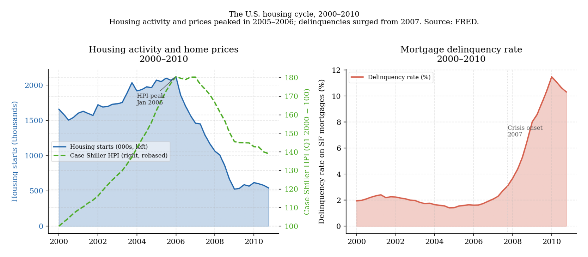
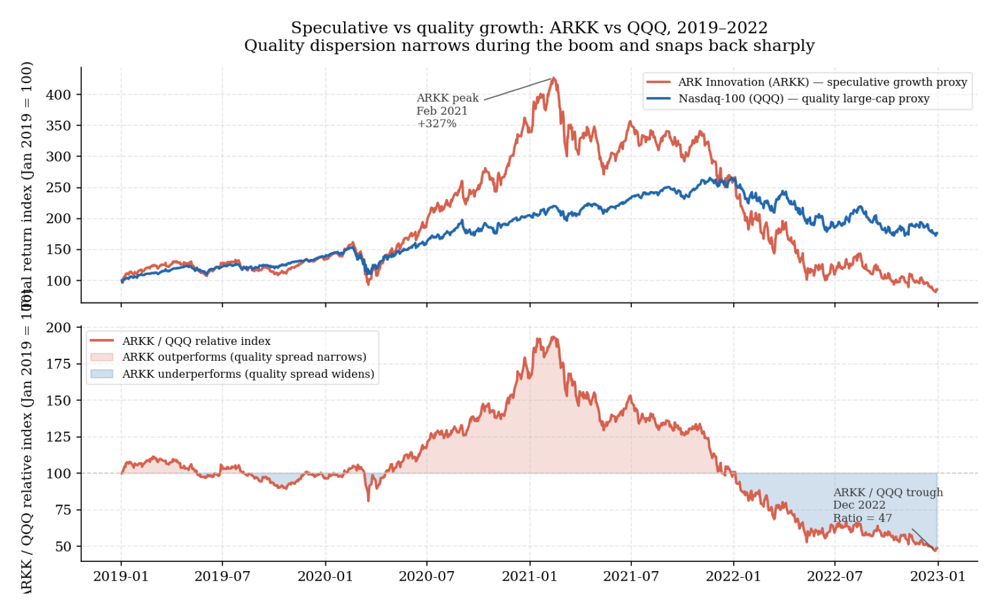
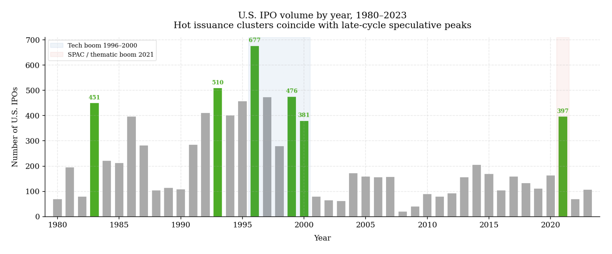
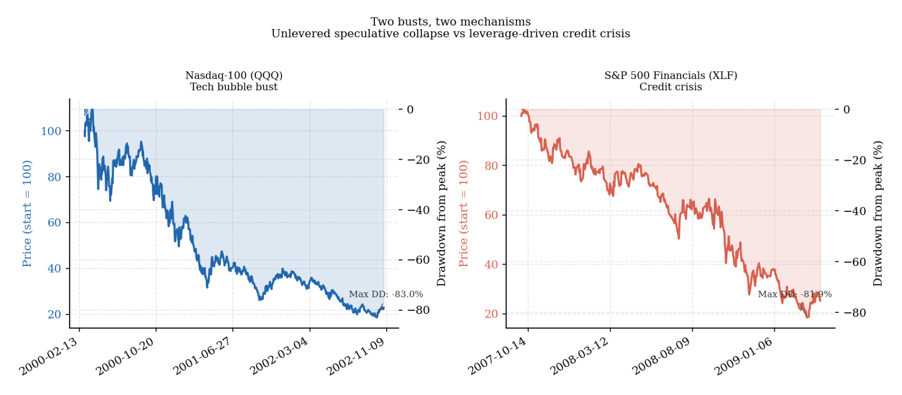

2. Speculation, excess, and the behavior of crowds
Speculative episodes are often treated as exceptions — departures from the normal condition of rational pricing that require special explanation. The historical record does not support that framing. Episodes of significant market excess have occurred across every major asset class, across every institutional era, and in markets populated by professional investors as well as retail ones. What changes across episodes is the surface detail. The underlying structure tends to be recognizable: a plausible initial thesis, rising prices that appear to validate it, broadening participation, weakening selectivity, and eventually a stage where price no longer needs strong fundamentals to keep moving. It only needs continued willingness from others to pay more (Kindleberger and Aliber 2011; Brunnermeier and Schnabel 2016).
This matters for a research framework because crowd dynamics change both risk and interpretation in ways that a purely valuation-based process misses. A position that is analytically sound over a long horizon can be overwhelmed in the short and medium term by momentum, leverage, and forced buying. A strategy that harvests a genuine premium under ordinary conditions can fail in a crowded regime because what it is actually capturing has shifted from mispricing to participation in a self-reinforcing move. Any framework that ignores this possibility has already become too static for actual markets.
How excess begins, and why it convinces
Speculative episodes rarely begin in nonsense. They usually begin in something real.
A genuine technological change, a structural decline in interest rates, a new regulatory opening, a new source of accessible capital — any of these can create a legitimate basis for early optimism. In those initial stages, price appreciation may be defensible. Barberis, Greenwood, Jin, and Shleifer make this point explicitly: good fundamental news can initiate a bubble rather than prevent one, because it attracts extrapolative capital that then continues well beyond what the original news can justify (Barberis et al. 2018). The problem is not that the observation is wrong. The problem is what happens when a valid observation becomes an unchecked extrapolation.
A strong business becomes one for which no valuation is considered excessive. A new technology becomes justification for setting aside questions of capital intensity, competitive entry, or financing cost. Easier liquidity becomes grounds for assuming that funding conditions will remain benign indefinitely. At that point the market is no longer repricing an improvement. It is capitalizing a progressively more demanding chain of assumptions, each one requiring the next to hold.
The 1990s technology cycle illustrates this structure clearly. The underlying thesis — that internet adoption would reshape commerce, communication, and information — was correct. What happened to valuations was something else. The chart below shows the Nasdaq Composite rebased to 100 in January 1995, alongside the S&P 500 Shiller CAPE. By early 2000 the Nasdaq had risen approximately 400 percent from its 1995 level while the CAPE reached approximately 44x — a level that could only be justified if growth remained frictionless, competition minimal, and capital permanently abundant. The story was real. The pricing had traveled far beyond what the story could support (Shiller 2015).
By the time the Nasdaq peaked, the price had become largely self-referential — the primary case for owning technology stocks was that they had been rising, not that the underlying businesses justified the implied terminal value assumptions. The correction that followed was not a surprise to valuation-aware investors. Its timing and severity were.
The same dynamic appeared in residential credit markets between 2003 and 2007, though through a different instrument. The underlying thesis — that diversified pools of mortgages would carry modest correlated default risk — was not unreasonable under historical assumptions. What those assumptions failed to anticipate was the feedback between easy credit, rising collateral values, and the volume of new origination. The chart below shows the U.S. housing cycle through this period. Housing starts and the Case-Shiller home price index rose together through the mid-2000s as financing conditions loosened and demand appeared self-sustaining. When conditions reversed in 2006 and 2007, delinquency rates began rising sharply — not gradually — because the diversification that had been priced as stable proved to be deeply contingent on the continuation of the boom that had created it (Brunnermeier and Schnabel 2016).

More recently, the 2020–2021 period saw parallel episodes across thematic equities, SPACs, and certain crypto assets. Fiscal and monetary support following the pandemic created liquidity conditions that encouraged reaching for return. Many assets with negligible current earnings were valued on terminal revenue assumptions that assumed no competition, no dilution, and no cost of capital. When real rates rose sharply through 2022, those implied discount rates became relevant again and valuations compressed severely — not because the businesses had necessarily deteriorated, but because the regime in which their valuations had been formed had changed (Cochrane 2011).
How crowds build and why they persist
These episodes tend to develop through recognizable stages, though the timetable is never fixed and the transitions are rarely clean.
Recognition comes first. A real change enters the market and is not yet fully priced. Early participants may have a genuine analytical basis. The trade is not yet crowded.
Validation follows. Rising prices attract attention. Investors who were initially skeptical begin to revise their view — not always because fundamentals improved further, but because price itself is now functioning as evidence. This is the Barberis-Shleifer-Vishny mechanism: investors act as if recent price increases raise the probability of continued appreciation rather than the probability of mean reversion (Barberis et al. 1998).
The expansion stage then brings more capital, new issuance, and a broadening of participation. Weaker businesses rise alongside stronger ones because market reward has shifted from underlying economics to association with the theme. Greenwood, Shleifer, and You identify several empirical markers of this phase: acceleration in industry returns, elevated volatility, rising issuance, and the relative outperformance of newer, less-established firms within the sector (Greenwood et al. 2019).
One of the clearest observable symptoms of the expansion stage is the deterioration of quality discrimination — the narrowing of the performance spread between fundamentally strong businesses and speculative ones riding the same thematic wave. The chart below illustrates this using ARK Innovation ETF (ARKK) as a proxy for high-growth, predominantly unprofitable businesses and the Nasdaq-100 (QQQ) as a proxy for quality large-cap technology. During the 2020 boom, ARKK dramatically outperformed QQQ as capital flowed indiscriminately toward growth-associated names regardless of profitability. When the regime reversed in 2022, the spread snapped back sharply. The relative index, shown in the lower panel, makes the cycle visible: quality discrimination collapsed during the expansion stage and reasserted itself forcefully once sentiment shifted.

Reflexivity then takes over. Price strength improves collateral values, eases financing terms, and raises reported wealth, all of which support additional buying. The boom begins to appear self-justifying from within. Scheinkman and Xiong formalize one version of this mechanism: when investors hold heterogeneous beliefs and can resell to more optimistic buyers, asset prices embed an option value of resale that pushes prices above any single agent’s fundamental estimate, independent of whether anyone in the market is irrational (Scheinkman and Xiong 2003).
The late stage typically looks strongest from the outside. Momentum remains powerful, sentiment is confident, and skeptics appear out of touch. But structural fragility has increased. Expectations are demanding. Continued support depends on sustained inflows from a marginal buyer who may already be fully extended. Supply tends to respond: new listings, secondaries, leveraged products, and themed vehicles emerge precisely when investor appetite is most abundant. The chart below shows annual U.S. IPO volume from 1980 to 2023. The clustering is striking — issuance surged in 1996–2000 during the technology boom, collapsed after the bust, and surged again in 2021 during the pandemic liquidity episode. In both cases the peak in issuance coincided with the peak in speculative enthusiasm, not with the period of most attractive forward returns (Loughran and Ritter 2002; Lowry 2003).

The implication for investors is that the supply response itself is a diagnostic signal. When financial intermediaries accelerate the creation of new investment vehicles, new listings, and new structured products to meet demand, they are responding rationally to pricing signals — and in doing so they are revealing something about where in the speculative cycle the market stands.
Why informed investors participate anyway
It is tempting to describe speculative excess as a phenomenon of the uninformed. The evidence does not support that. Institutional investors, experienced allocators, and analytically sophisticated analysts participate in crowded markets regularly, though usually for reasons that are structurally different from simple credulity.
The most consistent reason is relative-performance pressure. Underperforming a rising market is not experienced as passive neutrality in professional settings. It is experienced as active failure — visible to clients, to investment committees, and to competitors. When a popular theme continues to work, the cost of staying outside it is not only financial. It is institutional. Careers, mandates, and client relationships are all affected by prolonged underperformance relative to a benchmark that has moved in one direction. Hong, Kubik, and Stein find evidence consistent with this mechanism in the behavior of professional money managers: portfolio decisions are influenced by what peers are holding, in a way that amplifies rather than stabilizes price trends (Hong et al. 2005).
A second reason is that crowded trades can remain profitable well past the point where they appear analytically excessive. The immediate risk of resisting a popular theme may be greater than the immediate risk of joining it, even when the long-run risk profile has clearly worsened. This is why speculative episodes do not correct at the moment they become visible as speculative. The trade continues working because the mechanism sustaining it — inflows, leverage, narrative confidence — does not require fundamental support to remain operative in the short term.
A third reason is that being early and being wrong are difficult to distinguish in real time. A valuation argument may be directionally correct and still lose money over the horizon that matters for capital allocation, client relationships, or investment committee patience. Once that experience repeats, even careful analysts become more likely to adapt to the market rather than continue resisting it. Scharfstein and Stein formalize this in their model of herding among professional managers: reputational concerns create an incentive to act in line with others even when private signals diverge, because being wrong in a consensus trade is professionally safer than being wrong alone (Scharfstein and Stein 1990).
The difficulty of trading excess
Identifying a speculative regime is easier than acting on that identification profitably. This is one of the most practically important points in the analysis of crowded markets, and it is frequently underweighted.
The first problem is timing. A market can be recognizably extended and continue rising for much longer than expected. Many analytically sound short or underweight positions have been closed at a loss before the eventual reversal. Greenwood, Shleifer, and You address this directly: while historical data allow some identification of which episodes ended as crashes, the timing of the crash itself is not reliably forecastable (Greenwood et al. 2019).
The second problem is asymmetry of pain. The investor who joins a crowded trade late may still profit if inflows remain strong for another period. The investor who fights it correctly in analytical terms but too early may suffer drawdown, client pressure, and institutional erosion long before the reversal occurs.
The third problem is that reversals differ by mechanism. Some episodes deflate slowly through time and earnings disappointment. Others break abruptly when financing conditions tighten, when a single event changes risk appetite, or when one large forced seller triggers a liquidity withdrawal. Brunnermeier and Schnabel’s historical analysis shows that when a boom was financed primarily through leverage and credit expansion, the macroeconomic and financial damage from the bust tends to be substantially larger than when the excess was driven by unlevered enthusiasm alone (Brunnermeier and Schnabel 2016). The chart below makes this contrast visible. The Nasdaq-100 bust of 2000–2002 and the S&P 500 Financials collapse of 2007–2009 both produced severe drawdowns, but through very different mechanisms. The technology bust was an equity repricing without a systemic credit dimension — painful but contained. The financial crisis amplified through leverage, collateral calls, and institution balance sheets, producing a deeper systemic disruption despite a comparable peak-to-trough magnitude in equity prices.

A useful research process therefore keeps three judgments separate that are frequently collapsed into one. Whether an asset is expensive is one question. Whether it is crowded and dependent on continued inflows is another. Whether there is a credible near-term mechanism for the regime to change is a third. These are related but not identical, and conflating them produces both false urgency and false patience. Valuation establishes the long-run risk. Crowding determines how quickly that risk can express itself. The triggering mechanism determines the path. All three matter, and they are rarely answered by a single chart or a single signal.
References
Barberis, Nicholas, Robin Greenwood, Lawrence Jin, and Andrei Shleifer. 2018. “Extrapolation and Bubbles.” Journal of Financial Economics 129 (2): 203–27. https://www.hks.harvard.edu/sites/default/files/HKSEE/HKSEE%20Files/BF_Extrapolation_Greenwood.pdf.
Barberis, Nicholas, Andrei Shleifer, and Robert Vishny. 1998. “A Model of Investor Sentiment.” Journal of Financial Economics 49 (3): 307–43. https://scholar.harvard.edu/files/shleifer/files/model_of_investor_sentiment.pdf.
Brunnermeier, Markus K., and Isabel Schnabel. 2016. “Bubbles and Central Banks: Historical Perspectives.” In Central Banks at a Crossroads: What Can We Learn from History? Cambridge University Press. https://www.aeaweb.org/conference/2016/retrieve.php?pdfid=21744.
Cochrane, John H. 2011. “Presidential Address: Discount Rates.” The Journal of Finance 66 (4): 1047–108. https://paulgp.com/speeches/cochrane_2011_afa.pdf.
Greenwood, Robin, Andrei Shleifer, and Yang You. 2019. “Bubbles for Fama.” Journal of Financial Economics 131 (1): 20–43. https://www.nber.org/system/files/working_papers/w23191/w23191.pdf.
Hong, Harrison, Jeffrey Kubik, and Jeremy C. Stein. 2005. “Thy Neighbor’s Portfolio: Word-of-Mouth Effects in the Holdings and Trades of Money Managers.” The Journal of Finance 60 (6): 2801–24.
Kindleberger, Charles P., and Robert Z. Aliber. 2011. Manias, Panics, and Crashes: A History of Financial Crises. 6th ed. Palgrave Macmillan.
Loughran, Tim, and Jay R. Ritter. 2002. “Why Don’t Issuers Get Upset about Leaving Money on the Table in IPOs?” Review of Financial Studies 15 (2): 413–44. https://www.nber.org/system/files/working_papers/w8805/w8805.pdf.
Lowry, Michelle. 2003. “Why Does IPO Volume Fluctuate so Much?” Journal of Financial Economics 67 (1): 3–40. https://www.nber.org/system/files/working_papers/w7935/w7935.pdf.
Scharfstein, David S., and Jeremy C. Stein. 1990. “Herd Behavior and Investment.” The American Economic Review 80 (3): 465–79. https://www.jstor.org/stable/2006678.
Scheinkman, José A., and Wei Xiong. 2003. “Overconfidence and Speculative Bubbles.” Journal of Political Economy 111 (6): 1183–219.
Shiller, Robert J. 2015. Irrational Exuberance. 3rd ed. Princeton University Press.